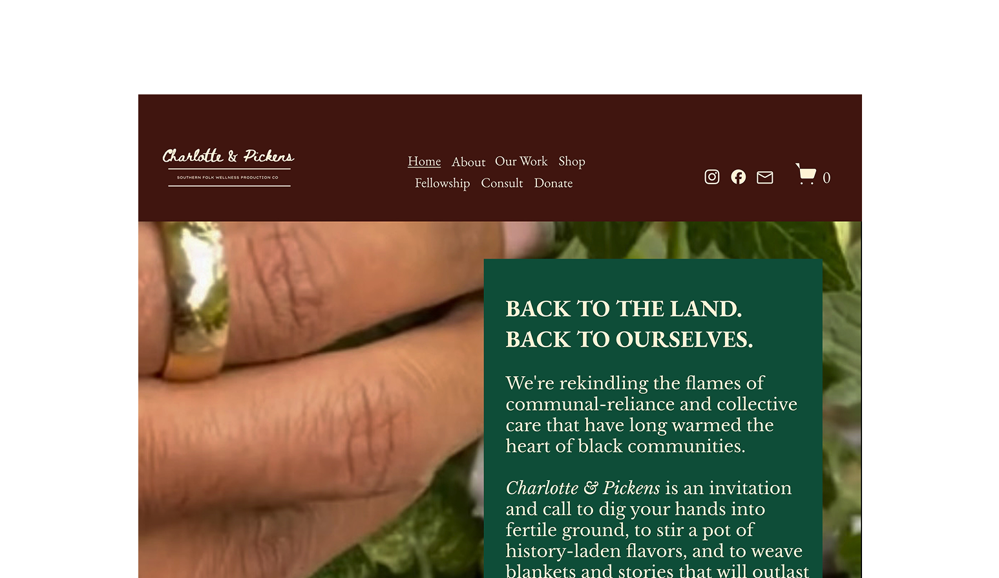
When I found Charlotte & Pickens, I didn’t immediately realize they sold herbal and wellness products — their brand story overshadowed their offerings. To fix this, I restructured the site to highlight their products sooner while keeping their cultural storytelling alive. I streamlined the information architecture, added strategic CTAs, and introduced visual hierarchy to guide users naturally from cultural context to purchase decisions.
Wellness
E-commerce
Figma
💡 Hover/Click over the dots to see specific improvements
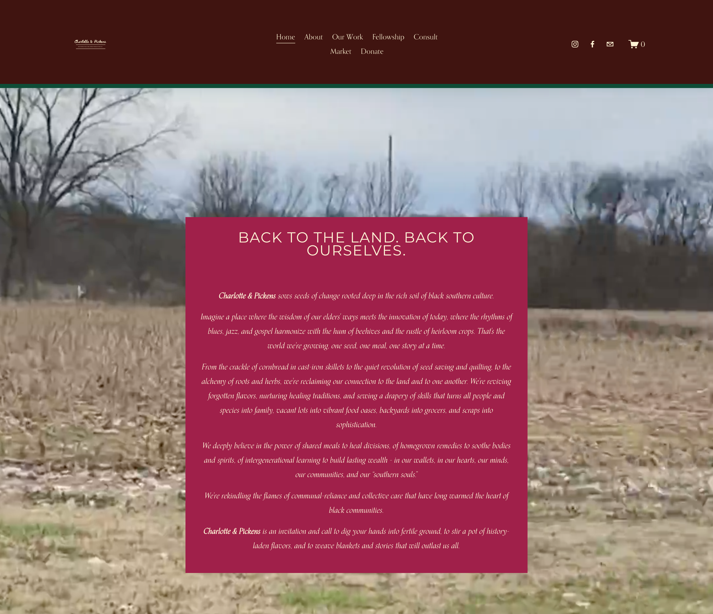
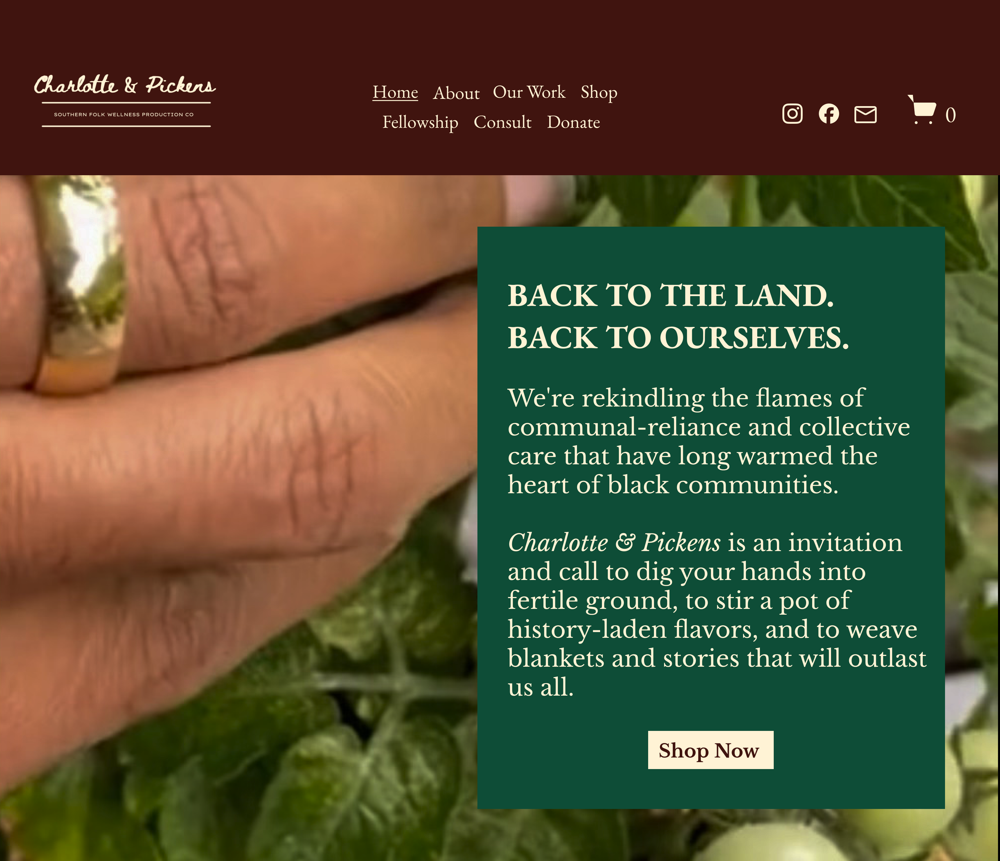
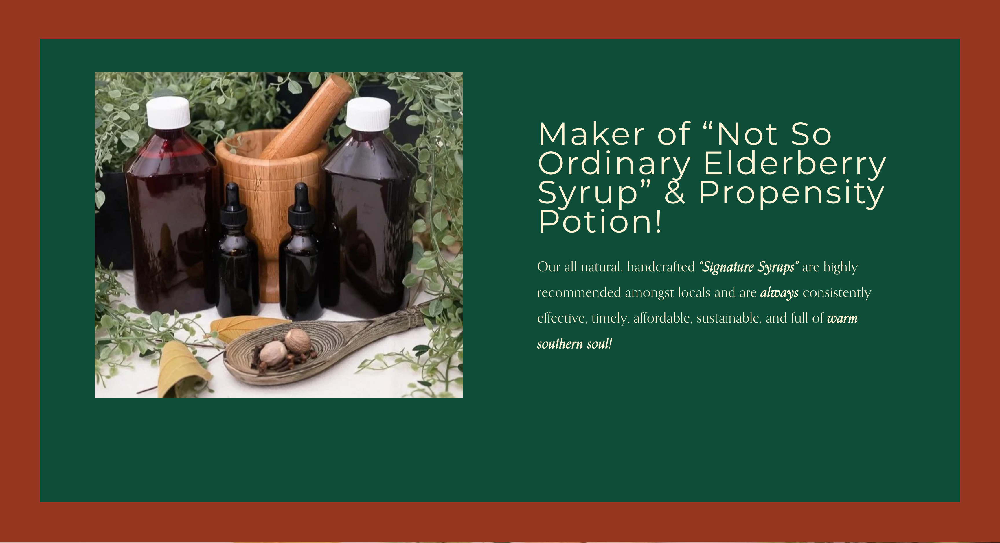
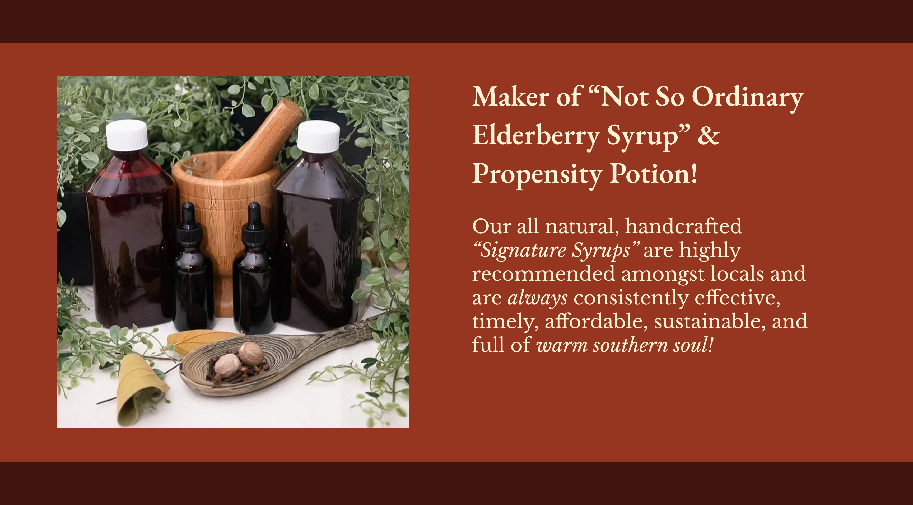
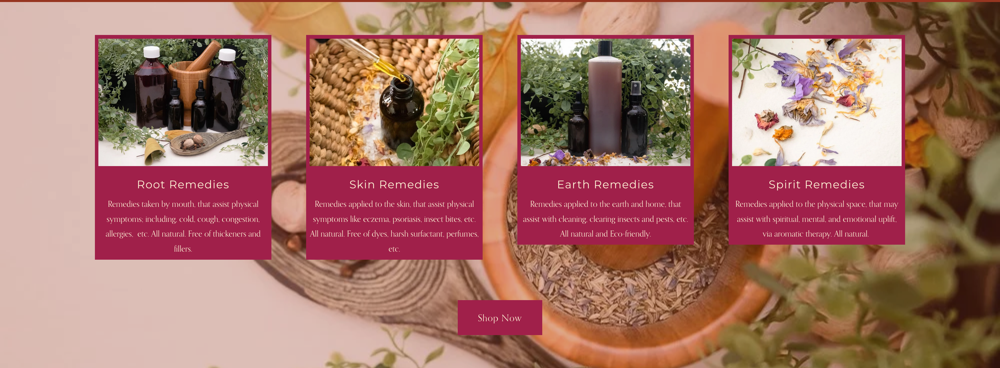
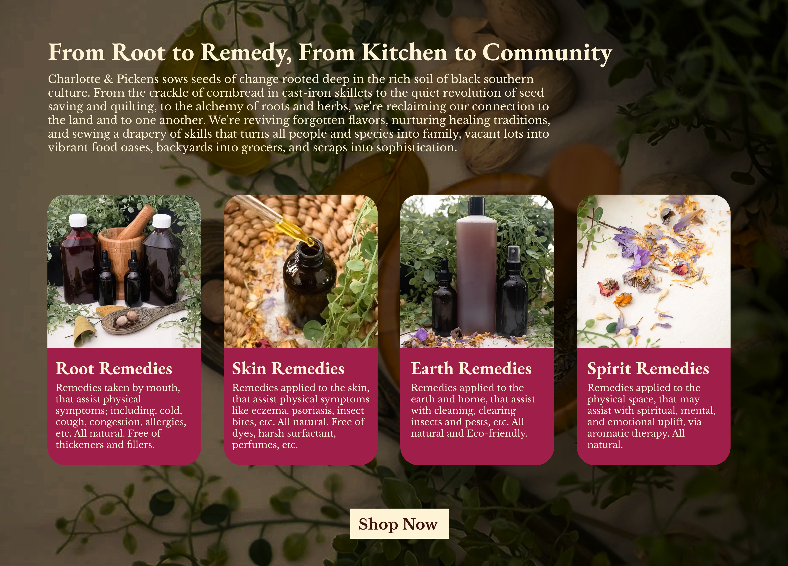
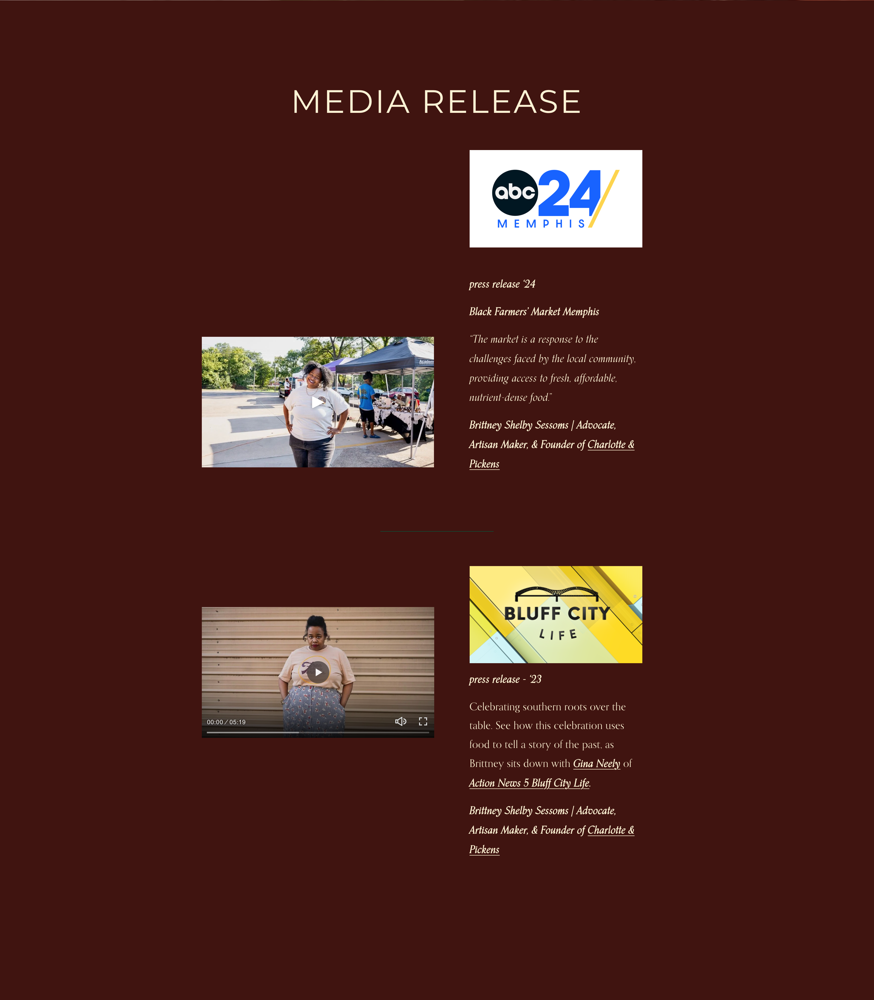
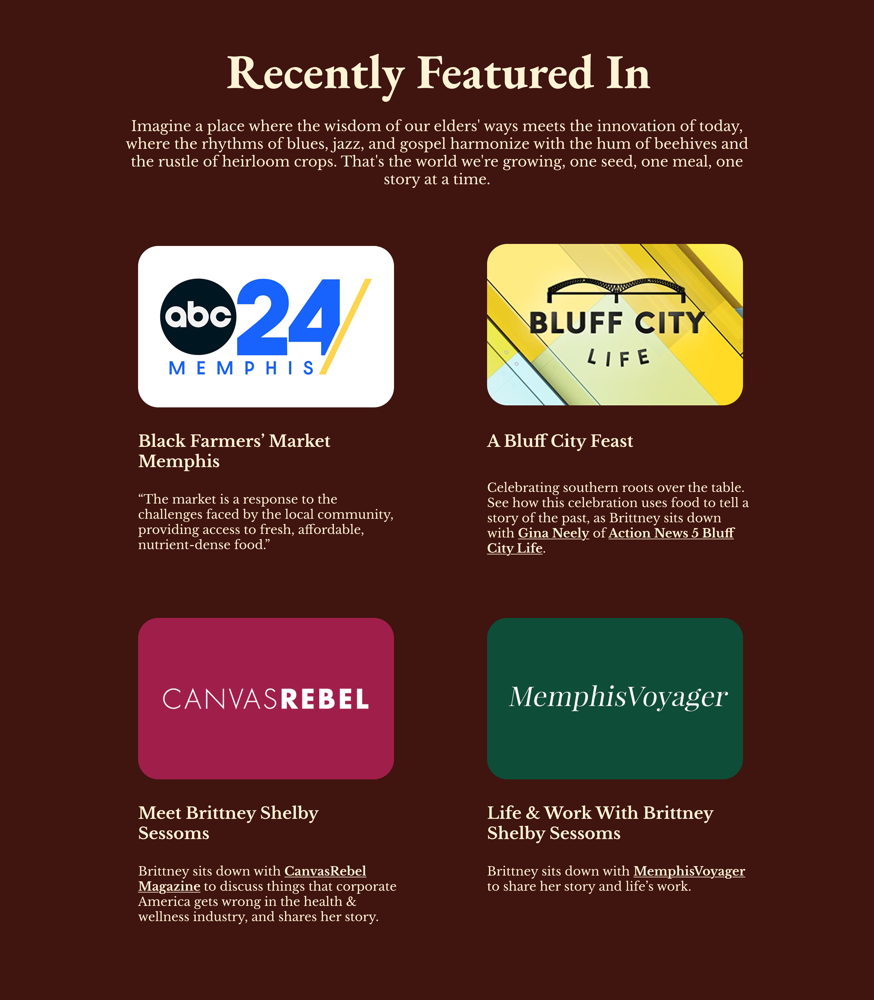
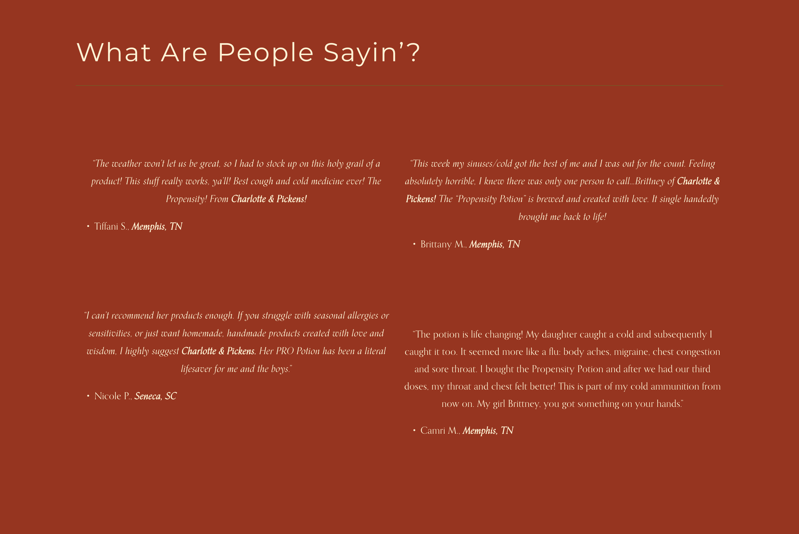
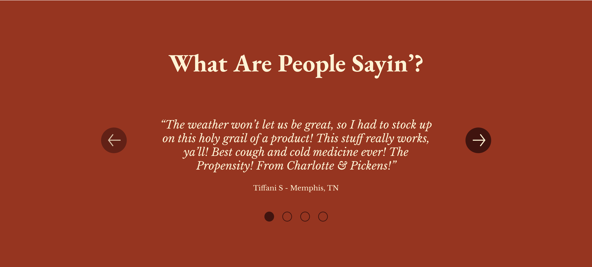
Note: This was an unsolicited redesign created to demonstrate UX/UI improvements. All design work and recommendations are my own.